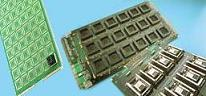
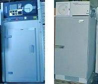

Burn-in
Burn-in
is an electrical stress test that employs
voltage
and
temperature
to accelerate the electrical failure of a device. Burn-in
essentially simulates the
operating
life
of the device, since the electrical excitation applied during burn-in
may mirror the worst-case bias that the device will be subjected to in
the course of its useable life. Depending on the burn-in
duration
used, the reliability information obtained may pertain to
the device's
early life
or its
wear-out.
Burn-in may be used as a
reliability
monitor
or as a
production
screen
to weed out potential
infant
mortalities from the lot.
Burn-in is
usually done at
125 deg C,
with electrical excitation applied to the samples. The burn-in
process is facilitated by using
burn-in boards
(see Fig. 1) where the
samples are loaded. These burn-in boards are then inserted into the
burn-in oven (see Fig. 2), which supplies the necessary voltages to the samples while
maintaining the oven temperature at 125 deg C. The electrical bias
applied may either be
static
or
dynamic,
depending on the failure mechanism being accelerated.
|
 |
|
Figure 1.
Photo of Bare and Socket-populated Burn-in Boards |
The operating
life cycle distribution of a population of devices may be modeled as a
bath tub
curve,
if the failures are plotted on the y-axis against the operating life in
the x-axis. The bath tub curve shows that the
highest
failure rates experienced by a population of devices occur during the
early
stage of the life cycle, or early life, and during the
wear-out
period of the life cycle. Between the early life and wear-out
stages is a long period wherein the devices fail very sparingly.
|
 |
|
Figure 2.
Two examples of burn-in ovens |
Early life
failure (ELF)
monitor burn-in, as the name implies, is performed to screen out
potential early life failures. It is conducted for a duration of 168
hours or less, and normally for only
48 hours.
Electrical failures after ELF monitor burn-in are known as early life
failures or infant mortality, which means that these units will fail
prematurely if they were used in their normal operation.
High
Temperature Operating Life (HTOL)
Test is the opposite of ELF monitor burn-in, testing the
reliability of the samples in their wear-out phase. HTOL is conducted
for a duration of 1000 hours,
with intermediate read points at 168 H and 500 H.
Although
the electrical excitation applied to the samples are often defined in
terms of voltages, failure mechanisms accelerated by current (such as
electromigration) and electric fields (such as dielectric rupture) are
understandably accelerated by burn-in as well.
Test Links:
Electrical
Test;
Burn-in;
Marking;
Tape
and Reel;
Dry
Packing;
Boxing
and Labeling
See Also:
HTOL;
Reliability Engineering; Die Failure Mechanisms;
IC
Manufacturing
HOME
Copyright
©
2001-2006
www.EESemi.com.
All Rights Reserved.